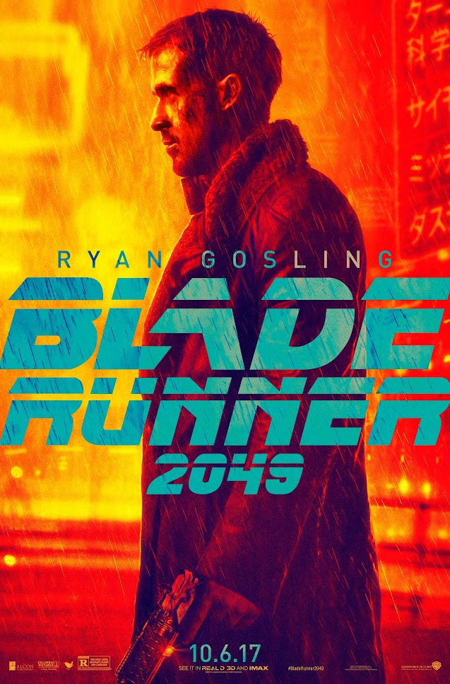

Denis Villeneuve: cómo convertir la lentitud en tensión pura
Denis Villeneuve, Trois-Rivières, Quebec, 3 de octubre de 1967, es un director de cine, productor y guionista canadiense respondable por joyas como La llegada, Blade Runner 2049 o la más reciente trilogía de Dune.
Villenueve ha sido un faro en cuanto a la ciencia ficción moderna. Famoso por la representación de la escala en sus películas (con las naves espaciales de La Llegada o los masivos gusanos del planeta Arrakis), o por su genialidad a la hora de emplear efectos prácticos que le dan a sus películas una presencia inigualable. Pero si hay una cualidad que me gustaría destacar por encima de cualquier otra cualidad, es la lentitud de sus películas.
Si bien de primeras podría parecer que esto es un defecto o una mala cualidad del director o guionista, Villenueve le da la vuelta a esta situación. Ya sea la evolución de la comunicación en La Llegada o cómo Paul Atreides conoce las costumbres de los Fremen, Villenueve consigue una inmersión que pocas veces se ve en el cine. Parece contradictorio que algo "lento", consiga generar un compromiso tan fuerte con el espectador, y sobre todo, la tensión que caracteriza al cine de ciencia ficción.
Y es que Villeneuve se aprovecha mucho de la anticipación, las pistas y sutilezas en el guión que nos van adelantando lo que está por venir. Esto, combinado con un ritmo lento y una gran inmersión, genera una sensación de tensión y de pérdida de la noción del tiempo sin igual, lo que le ha permitido que cada parte de Dune dure tres horas y aún así se sientan frenéticas.
Filmografía
| Año | Título | Director | Guionista | Productor |
|---|---|---|---|---|
| 1998 | Un 32 août sur terre | ✔ | ✔ | |
| 2000 | Maelström | ✔ | ✔ | |
| 2009 | Polytechnique | ✔ | ✔ | |
| 2010 | Incendies | ✔ | ✔ | |
| 2013 | Prisoners | ✔ | ||
| Enemy | ✔ | |||
| 2015 | Sicario | ✔ | ||
| 2016 | la Llegada | ✔ | ||
| 2017 | Blade Runner 2049 | ✔ | ||
| 2021 | Dune: Parte uno | ✔ | ✔ | ✔ |
| 2024 | Dune: Parte dos | ✔ | ✔ | ✔ |
| 2026 | Dune: Parte tres | ✔ | ✔ | ✔ |
Premios Ganados
Aunque tanto Villenueve como sus películas han sido nominados a múltiples premios, incluidos Óscars, BAFTAs y Globos de Oro, tan sólo ha ganado Canadian Screen Awards (anteriormente Premios Genie):
- Maelström a mejor película y mejor guión en 2001.
- Polytechnique a mejor director en 2010.
- Incendies a mejor director y mejor guión adaptado en 2011.
- Enemy a mejor director.
Cartelera

Tráirlers
Tráiler de La Llegada
Tráiler de Blade Runner 2049
Tráiler de Dune Parte 3
Villenueve y Hans Zimmer: el combo perfecto
Para la reciente trilogía de Dune, Villenueve se asoció con el famoso compositor Hans Zimmer, conocido por bandas sonoras como El Rey León, Gladiator o Interesterar, entre otras. Aquí dejo algunas piezas de la trilogía de Dune.